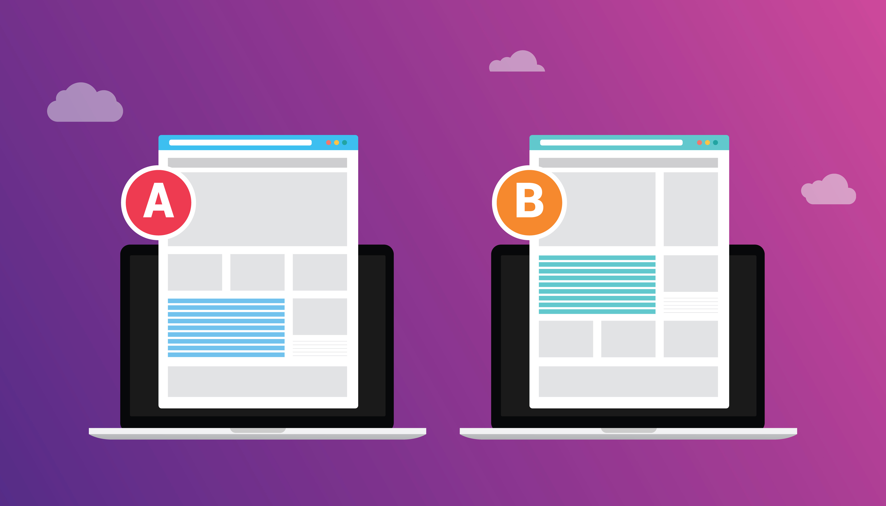

The Relationship
Waterfall and Agile are opposite approaches to software development. Waterfall is the traditional method that Agile was created to replace and improve upon. They represent two fundamentally different philosophies about how to build software.
Key Differences

| Aspect | Waterfall | Agile |
|---|---|---|
| Development Approach | Sequential and linear - one phase must be completed before the next begins | Iterative and incremental - work happens in repeated cycles with continuous feedback |
| Flexibility | Rigid - changes are difficult and expensive once a phase is complete | Flexible - welcomes changes even late in development |
| Requirements | All requirements defined upfront before development starts | Requirements evolve throughout the project based on feedback |
| Customer Involvement | Limited involvement - mainly at the beginning (requirements) and end (delivery) | Continuous involvement - regular feedback and collaboration throughout |